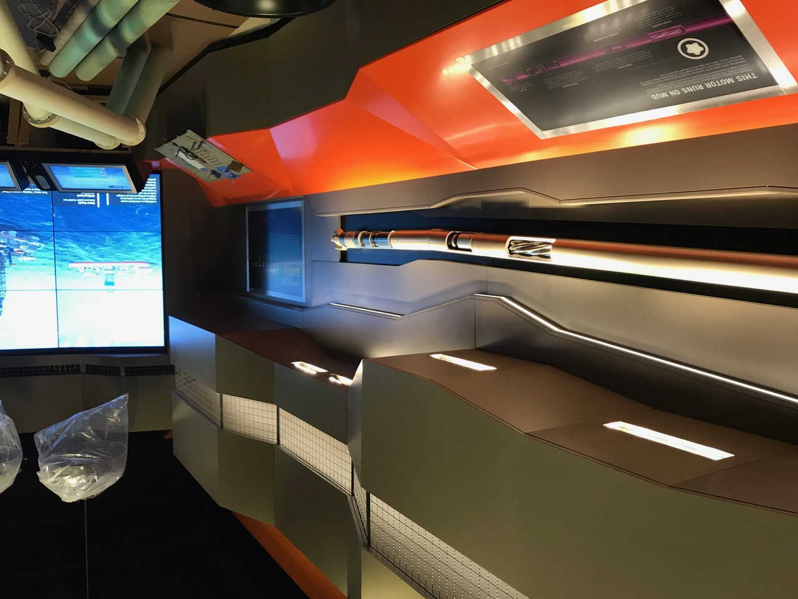
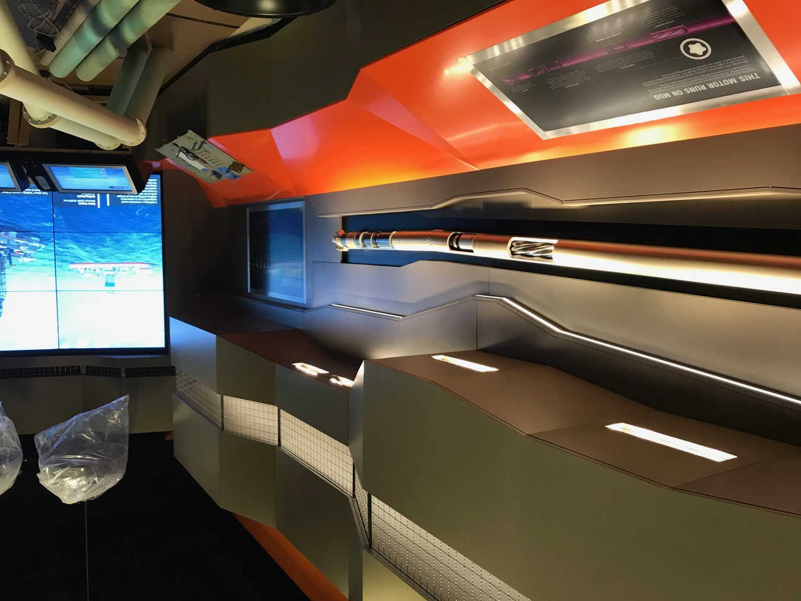
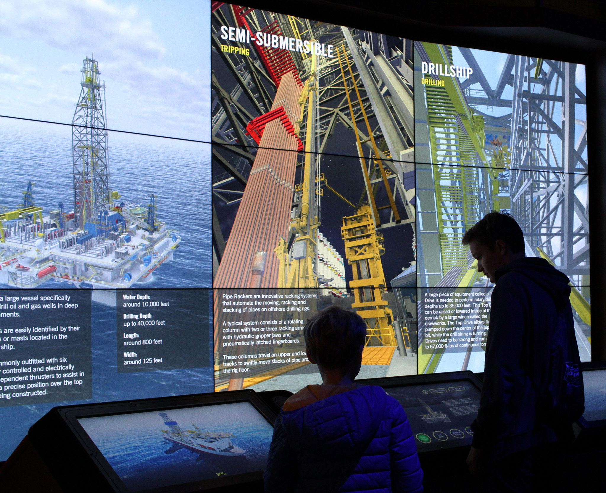
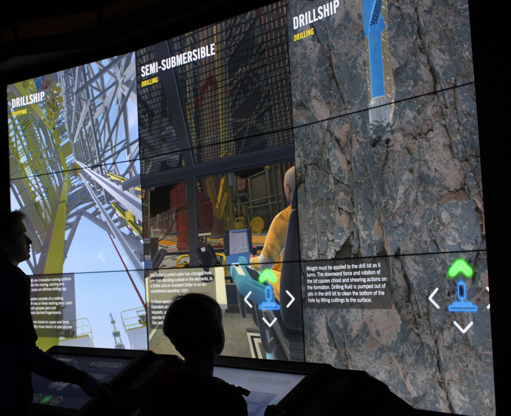
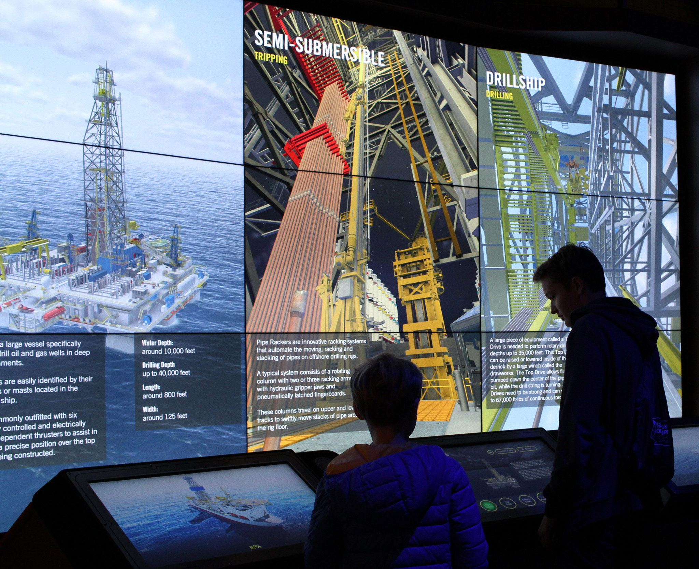
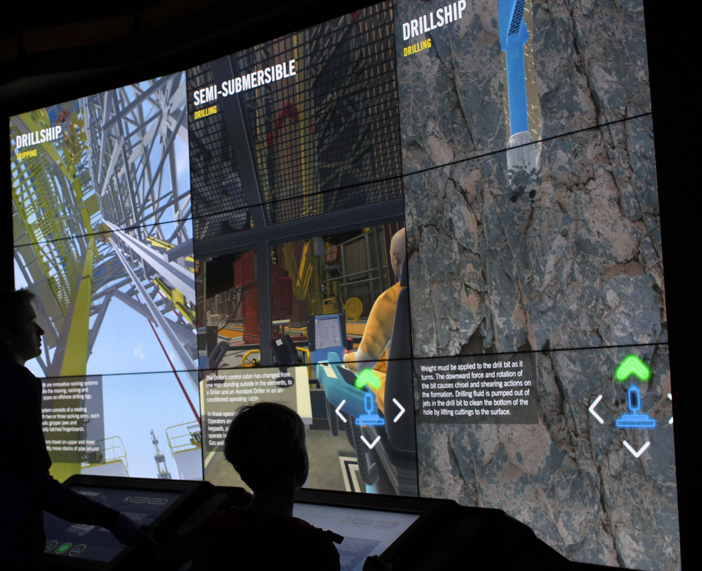

Houston Museum Exhibition
I helped to create graphics (Print and digital UI) for a drilling exhibition at the Houston Museum of Natural Science in Texas. The project required translating complex technical information into accessible, engaging visuals for museum visitors.

 

 



KREW Learning Platform
More recently, I have been working as the UI/UX designer for their learning platform: KREW, developed together with IADC (International Association of Drilling Contractors). My role was to design clear, easy-to-use interfaces and visuals that support learning and professional development for oil drillers and supervisors.
The platform needed to balance technical depth with accessibility, ensuring that users could navigate complex training materials efficiently while maintaining engagement throughout their learning journey.